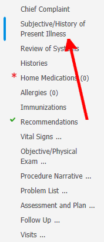
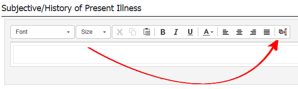
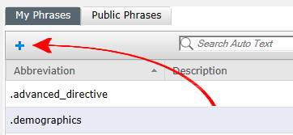
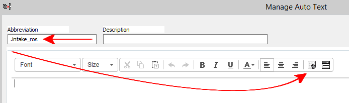
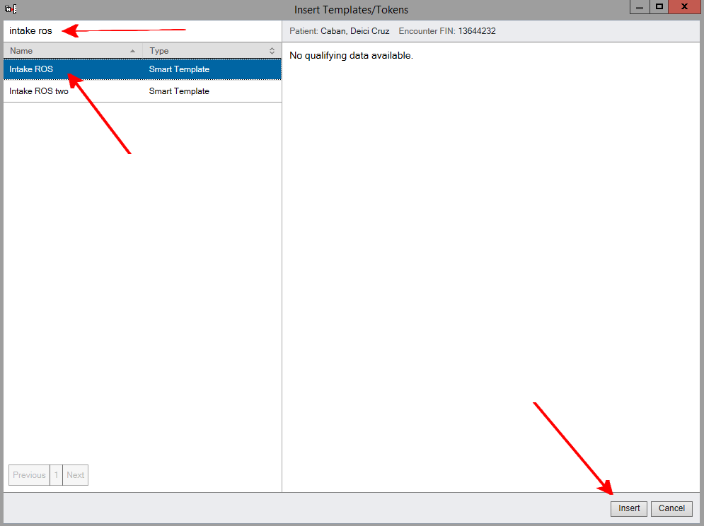
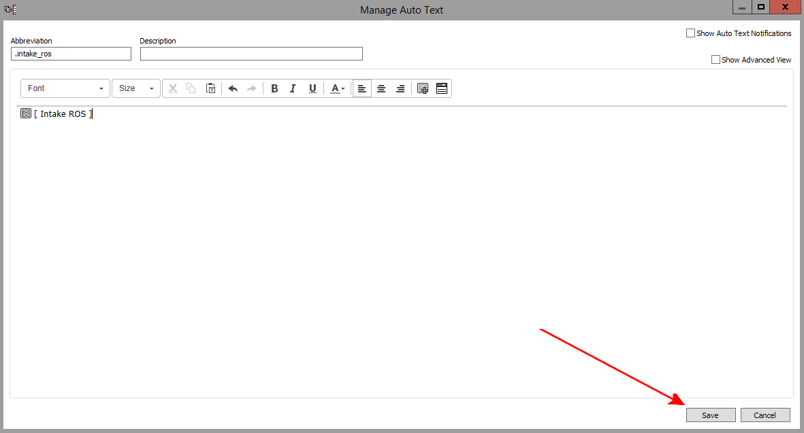
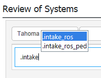
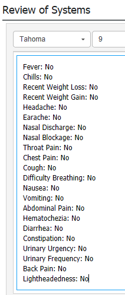

You can use an autotext token to pull in the review of systems that was completed by the technician.







Repeat the above process to make an autotext for pediatric review of systems. Use the "Intake ROS two" token.
Now you can use the autotext to pull the review of systems by typing ".intake" into a text field.

